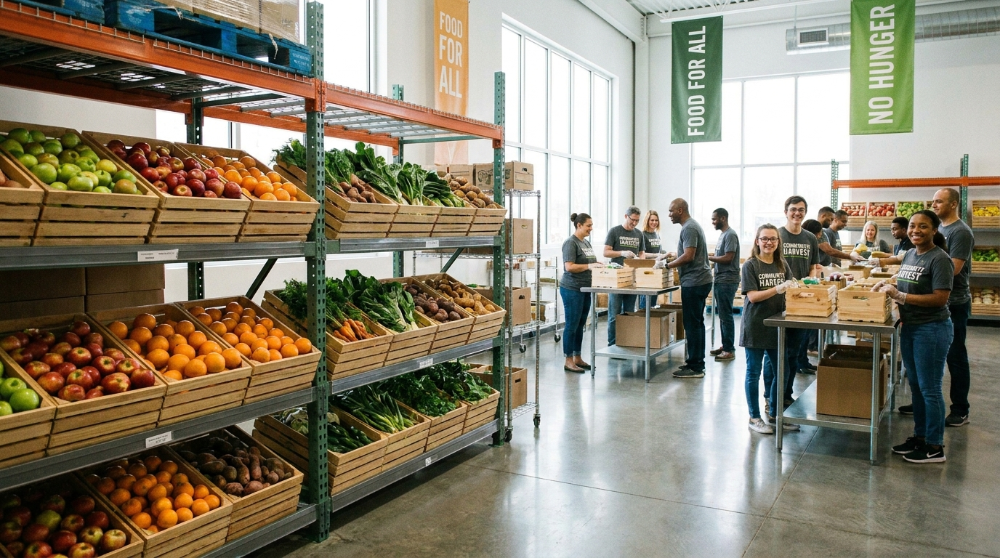

ODS 3
FOME ZERO E AGRICULTURA SUSTENTAVEL
Nosso Manifesto: Tecnologia a serviço de quem precisa
Acreditamos que o acesso à alimentação é um direito humano fundamental, não um privilégio. Em um mundo onde a abundância convive diariamente com a escassez, a ineficiência logística não pode ser uma desculpa para a fome.
Nossa missão é erradicar a insegurança alimentar conectando, em tempo real, os excedentes de alimentos de toda a cadeia produtiva às organizações que atendem quem mais precisa, de forma rápida, rastreável e inteligente.
Compromisso Agenda 2030 (ONU): O FoodMap foi estruturado para ser uma ferramenta direta de execução do Objetivo de Desenvolvimento Sustentável 2. Atuamos ativamente na meta 2.1, garantindo o acesso a alimentos seguros e nutritivos durante todo o ano, e na meta 12.3, operando na redução sistemática do desperdício global de alimentos nas fases de varejo e consumo.
O Tamanho do Desafio
Métricas que guiam nossa atuação estratégica e avaliação de impacto socioambiental.
33M+
pessoas em situação de insegurança alimentar grave no Brasil.
0
plataformas centralizadas para gestão eficiente de doações locais até nossa fundação.
40%
de todos os alimentos produzidos são desperdiçados no país.
R$61B
valor estimado do desperdício anual de alimentos no Brasil.